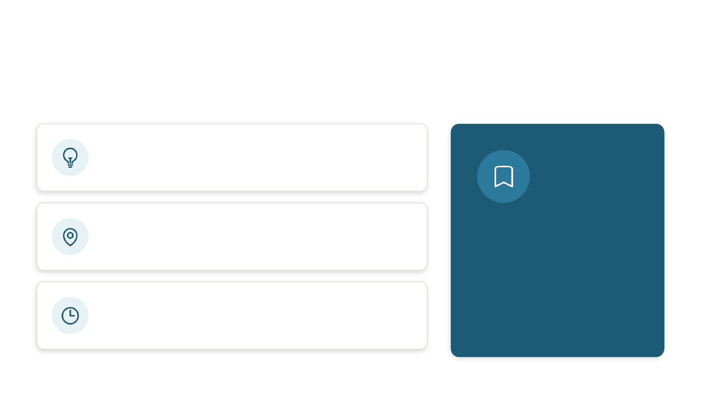
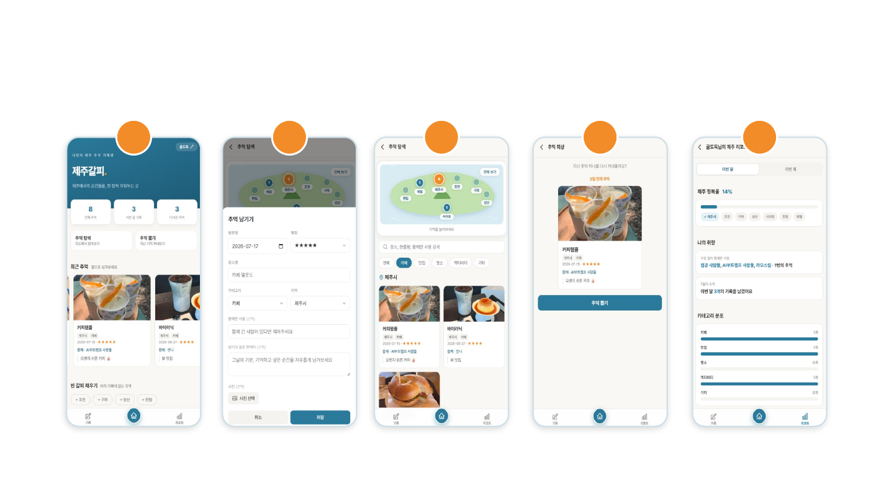
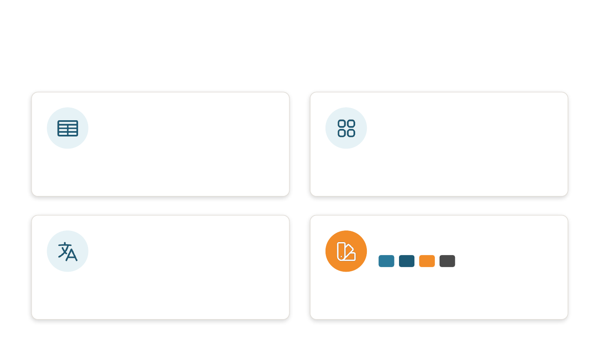
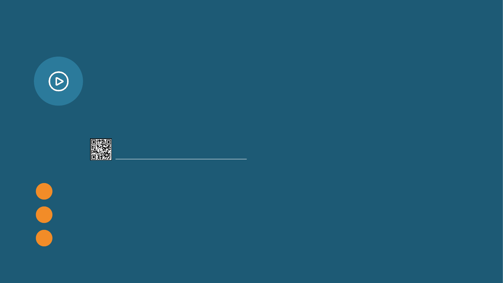
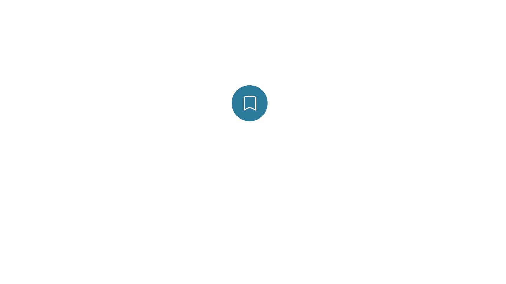

나만의 제주 추억 기록장
제주갈피
.
제주에서의 순간들을, 한 장씩 끼워두는 곳
제주대학교 컴퓨터공학과 박혜영

왜 “제주갈피”인가요?
책의 갈피(책갈피)처럼, 제주에서의 순간에 끼워두는 나만의 기록
타켓 유저
제주를 자주 오거나, 제주에 거주하며 일상을 여행처럼 즐기고 기록을
남기고 싶은 분들
기록하는 것들
다녀온 장소 · 카테고리 · 함께한 사람 · 그날의 한마디 · 사진
기억 아카이빙
“그때 누구랑 어디를 갔었지?” 기억이 흐릿할 때, 언제든 쉽게 찾아보고
회상할 수 있는 개인화된 아카이빙 웹앱
제주갈피
제주
+
갈피
책에 책갈피를 꽂아두듯, 제주에서의
아름답고 소중한 순간들을 한 장씩
끼워두고 기억하자는 의미를 담음

앱 주요 기능 및 흐름
별명으로 시작 → 홈에서 한눈에 보고, 추억을 남기고, 추억을 탐색/회상하고, 리포트로 돌아보기
1
홈
내 기록 한눈에
３
탐색 · 지도
지역별로 찾기
２
기록
추억 남기기
５
리포트
정복률 · 취향
４
회상
지난 추억 뽑기

수업에서 배운 내용들
데이터 · 아이콘 · 폰트 · 컬러까지 하나의 톤으로
Google Sheets 연동
별도 서버 없이 스프레드시트를 DB처럼 사용.
기록 조회 · 저장 · 수정 · 삭제를 모두 시트에 연
결
Heroicons (SVG 아이콘)
홈 · 지도 · 차트 등 UI 아이콘을 SVG로 사용해
어떤 화면 크기에서도 선명하게 보임
Pretendard 웹폰트
본문 전체에 한글 최적화 폰트를 적용해
가독성을 높임
메인 컬러 팔레트
제주 바다색과 감귤색을 포인트로,
앱 전체의 브랜드 톤을 통일함

L I V E D E M O
시연
1
지도에서 지역을 눌러 추억 찾아보기
2
기록 버튼으로 새 추억 남기기 (사진 · 별점 · 한마디)
3
리포트에서 제주 정복률 · 나의 취향 확인

제주갈피
.
감사합니다